Forward Outside Edges
Beginner–Intermediate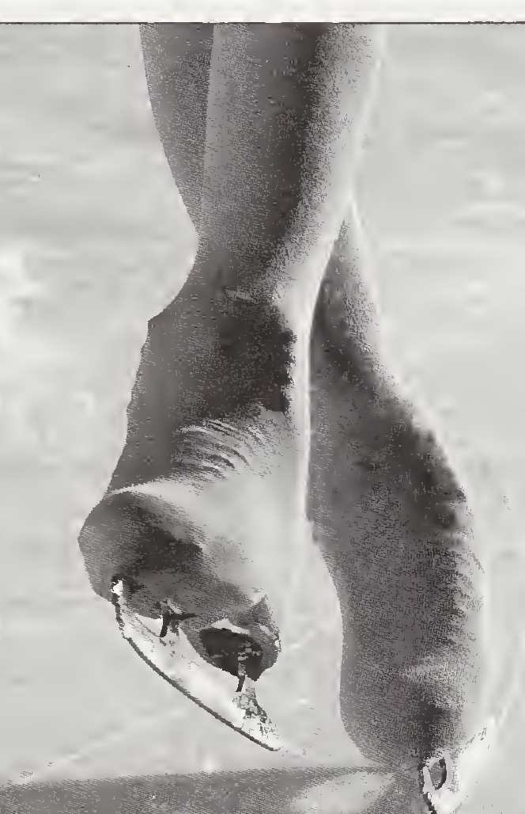
Arms stretched out to the sides, palms facing the ice and pressing down slightly; ribcage lifted so the back stays straight. Lean slightly toward the skating side.
Start in a T position (right foot in front, its heel at the left foot’s instep). Both knees bend; push off as the left ankle bends to its inside edge and the weight transfers onto the right foot. The free (left) foot is held behind the skating foot, then swings through — passing close beside it — to end in front, over the print. Repeat on the other foot.
The right foot rides its outside edge on a slight curve. (In the diagram, the red dot is the pressing outside edge.)
Tips
- Circle drill: glide on one foot on a circle — the foot on the inside of the circle rides its outside edge. Practice both directions to get right and left edges.
- Alignment check at the barrier: ankle, hip, and shoulder of the skating side in one straight, vertical line.
Forward Inside Edges
Beginner–Intermediate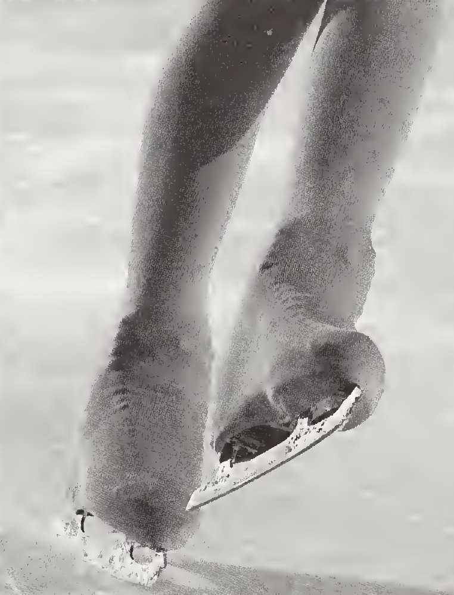
Held square to the tracing. The arm opposite the skating foot (the left arm, for a right edge) is in front of the body, palm down and pressing slightly; the other arm is behind, level with the front arm. Lean slightly toward the inside of the curve.
Start in a T position, right foot in front. Both knees bend; push off as the left ankle bends to its inside edge and the weight transfers onto the right foot. The free foot is held behind, then passes close beside the skating foot to end in front, over the print. Repeat on the other foot.
The right foot rides its inside edge on a slight curve.
Tips
- Circle drill: glide on two feet on a circle and pick up the foot on the inside of the circle — the remaining foot is on its inside edge. Skate the circle both clockwise and counterclockwise.
Back Outside Edges
IntermediateArms out to the side, palms facing the ice; during the glide, the left arm is in front and the right arm behind.
Start parallel, shoulder-width apart, knees bent. The knees rise and the weight shifts onto the left foot, which pushes you onto the right back outside edge. As the weight transfers, the right foot lifts about 3 inches, toe pointed inward (pigeon-toed), so it comes down on a backward edge rather than a forward one. The free (left) foot is then held above the skating foot, over the print. Repeat on the other foot.
The right foot rides its back outside edge on a slight curve. The push-off leaves a curved print nicknamed a “rat tail.”
Tips
- Circle drill: skate backward on a circle with a pump step and feel the back outside edge — the foot on the inside of the circle rides it. Both directions.
Back Inside Edges
IntermediateArms stretched out to the side; during the glide, the left arm is in front and the right arm behind the body.
Start parallel, shoulder-width apart, knees bent. The weight transfers onto the left foot, which pushes you onto the right back inside edge; the right foot rises about 3 inches, toe pointed in, and lands on a backward inside edge. The free foot lifts and is held above the skating foot, over the print. Repeat on the other foot.
The right foot rides its back inside edge on a slight curve.
Tips
- Circle drill: glide backward on two feet on a circle; pick up the inside foot — the remaining foot is on its back inside edge. Both directions.
Change of Edge
Advanced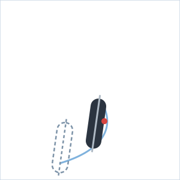
1 · Entry edge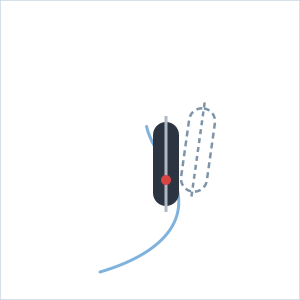
2 · The change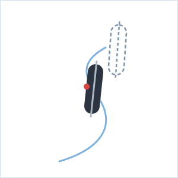
3 · Exit edge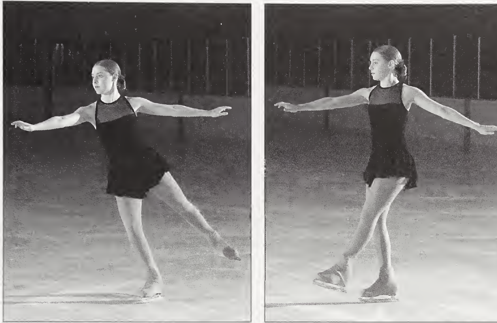
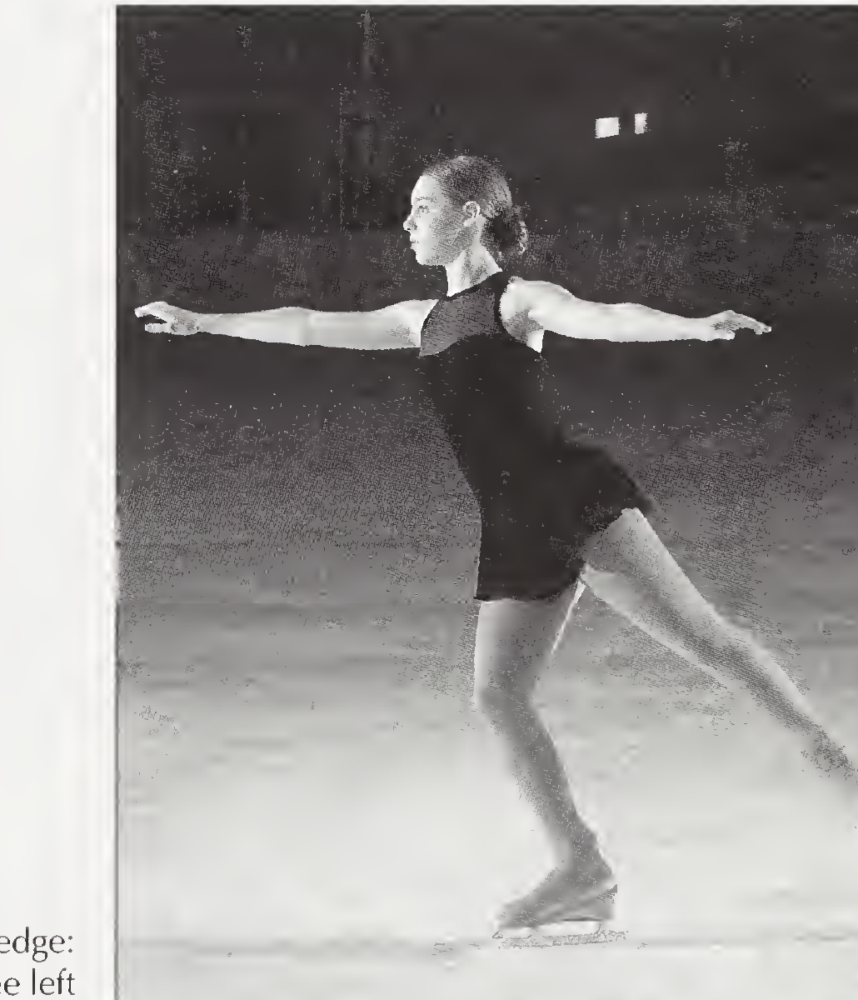
Keep the weight and lean over the skating hip the whole time. The shoulders reverse without over-rotating — over-rotation, and breaking the skating hip’s alignment, are the two classic mistakes that make the change impossible.
One foot stays on the ice throughout. The free foot swings forward, then back (in forward changes), driving the rock from one edge to the other; in backward changes it moves back, then forward.
The blade rocks from one edge to the other through a short flat as the curve straightens — the print it leaves on the ice is an S (serpentine).
Tips
- Four versions: forward outside→inside, forward inside→outside, backward outside→inside, backward inside→outside — practice all of them, on both feet.
- Where it’s used: changing edge before a turn, jump and spin entrances, and recovering when you’re slightly off balance.
- Practice backward changes on two feet first. Advanced standard: the flat part of the S should be no more than one foot long.
Forward Crossovers
Intermediate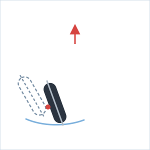
1 · Glide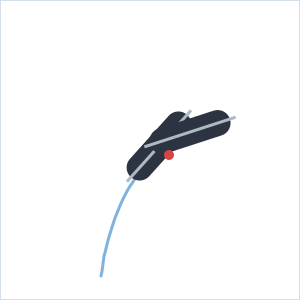
2 · The cross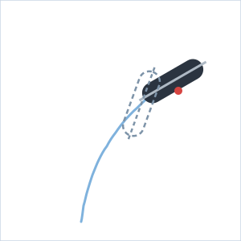
3 · Push & glide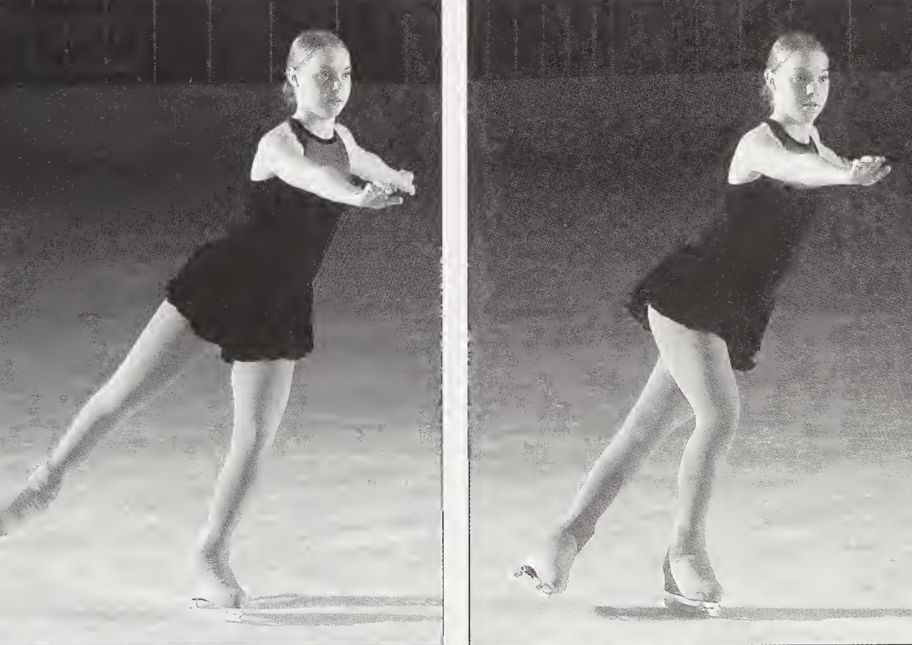
Skate on a circle with a lean into it. The arms stay fixed the whole time: for clockwise crossovers, right arm in front and left arm out to the side — like clock hands reading 3:00 — whichever foot the weight is on.
With the weight on the outside edge of the left foot, the right foot crosses over in front; then the left foot is picked up and placed beside the right. Repeat — and practice the other direction on a counterclockwise circle.
The crossing (right) foot lands on an inside edge; the skating (left) foot rides its outside edge. Speed plus lean is what puts the skates on edge.
Tips
- Standing drill: pick up the left foot and cross it in front of the right, then put the right back beside it; step sideways across the ice, then back the other way, until your balance is secure.
- Advanced form: every step becomes a stroke — skating knee bent, free leg straight and extended, push from the blade, never the toe picks.
Back Crossovers
Advanced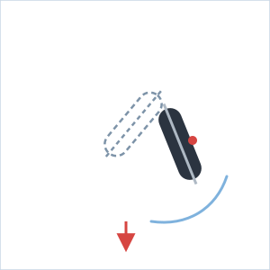
1 · Glide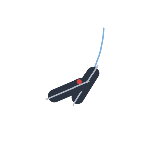
2 · The cross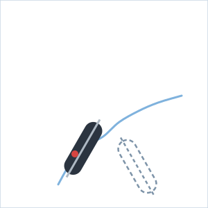
3 · Push & glideThe same fixed arm positions as forward crossovers (clockwise: right arm in front, left arm extended toward the direction of travel). Skating knee bent; free leg straight and extended.
Travelling backward on a circle: weight on the outside edge of the left foot, the right foot crosses over in front; the left foot is then raised and placed beside the right. Repeat — and practice counterclockwise too.
The crossing foot lands on an inside edge; power comes from edge pressure and knee bend.
Tips
- The most common and powerful way of skating backward.
- Build-up: backward pump step on a circle (neither foot lifts) → stepping one foot over the other with little momentum → add speed.
- More power: place the inside foot into the circle and draw the feet together before crossing; advanced skaters keep the front foot on the ice and lift only the back foot into the circle — a scissor action.
All seven skills at a glance
| Skill | Start position | Skating foot rides | Free foot does | Signature drill |
|---|---|---|---|---|
| Forward outside edge | T position | Outside edge, slight curve | Behind → swings through to front | One-foot glide on a circle |
| Forward inside edge | T position | Inside edge, slight curve | Behind → swings through to front | Two-foot circle, lift the inside foot |
| Back outside edge | Parallel, shoulder-width | Back outside edge | Held above the skating foot, over the print | Backward circle, pump step |
| Back inside edge | Parallel, shoulder-width | Back inside edge | Held above the skating foot, over the print | Backward two-foot circle, lift the inside foot |
| Change of edge | Already on an edge | Rocks outside ↔ inside through a flat | Swings forward/back to drive the rock | Two-foot backward changes first |
| Forward crossovers | On a circle, leaning in | Outside edge | Crosses over on its inside edge | Standing step-over drill |
| Back crossovers | On a circle, going backward | Outside edge | Crosses over on its inside edge | Backward pump step on a circle |